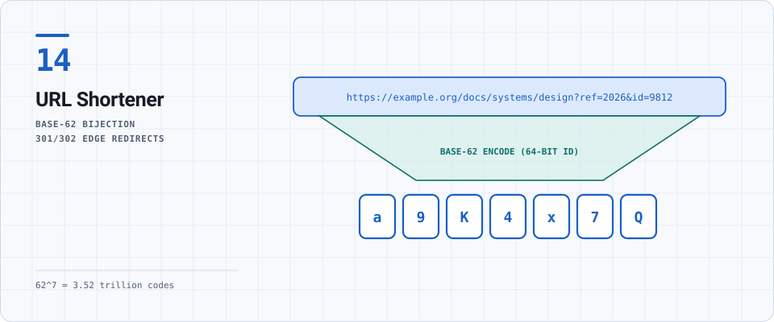
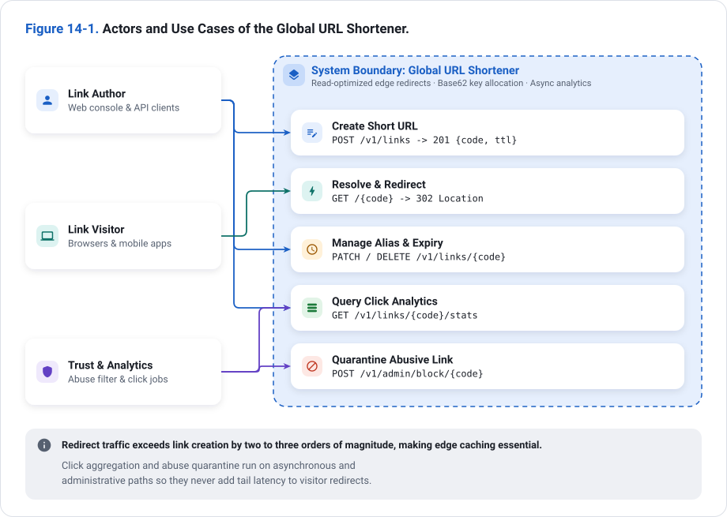
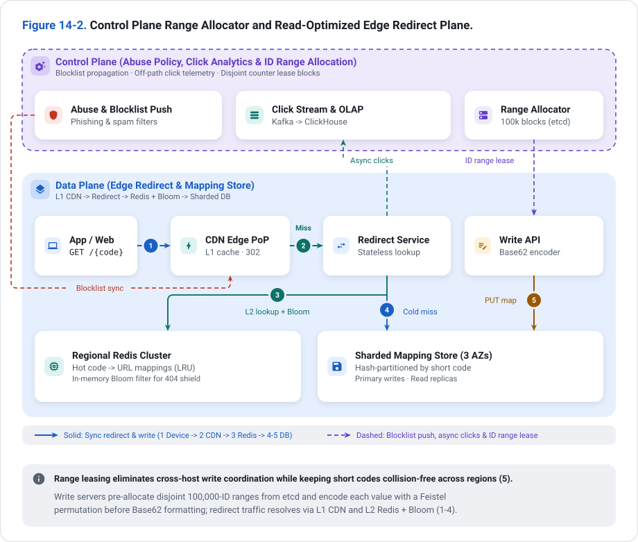
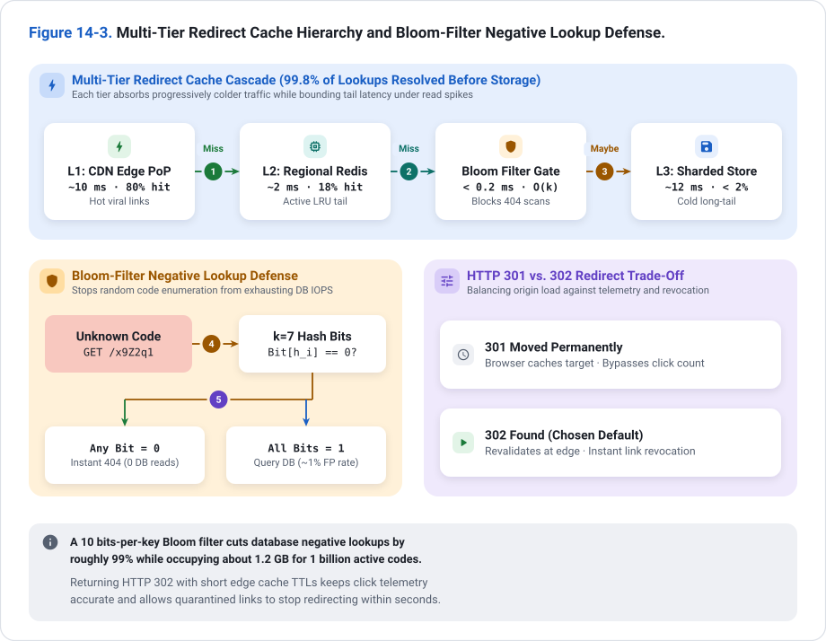

14. URL Shortener: System Design
A global URL shortener maps an arbitrary target web address to a compact alias, such as sho.rt/4C92a7Q, and redirects every incoming visitor to the original destination within milliseconds. Although the core data model fits into a single key-value relation, operating a public redirect service at internet scale exposes foundational distributed systems tensions: generating short, collision-free, non-enumerable identifiers without cross-node write contention; serving a 100:1 read-heavy workload under extreme Zipfian skew; recording high-volume click analytics without introducing write amplification on the redirect path; and revoking malicious links promptly across globally distributed caches.
In this chapter, we design a globally distributed URL shortener anchored around a strict asymmetry between writes and reads. Creating a link happens at a modest rate and tolerates tens of milliseconds of latency, whereas following a link happens two orders of magnitude more frequently and sits directly on the critical path of every user clicking a link in an email, message, or web page. A brief pause in link creation inconveniences one author; a failed redirect breaks published links for millions of visitors simultaneously.
In this chapter, we cover
- actors, use cases, functional requirements, sub-10 ms redirect SLOs, explicit non-goals, and 5-year capacity bounds
- external HTTP/2 contracts for link creation,
301/302redirection, alias management, abuse quarantine, and relational and key-value schemas - separation of the control plane (range allocation, blocklist propagation, click analytics) from the read-optimized data plane
- key allocation strategies comparing truncated cryptographic hashes, random generation, and disjoint counter range leasing with Base-62 bijection and Feistel scrambling
- multi-tier redirect caching (CDN edge, regional Redis, Bloom filter negative-lookup defense),
301versus302revocation trade-offs, and asynchronous click pipelines - failure-mode mitigation matrices, operational SLIs, production benchmarks (Bitly, TinyURL, Flickr Base58), and verification via
code/shortener
14.1 Requirements, Actors, and Capacity Bounds
Actors and Use Cases
We partition the URL shortener boundary around three external actor groups (Figure 14-1).

| Actor | Operation | Concrete Scenario |
|---|---|---|
| Link Author | Create short link (POST /v1/links), update expiry or alias (PATCH / DELETE /v1/links/{code}), query analytics (GET /v1/links/{code}/stats) | Marketing team or API client shortens a parameterized campaign URL with a 90-day expiry and inspects daily click totals |
| Link Visitor | Resolve and follow short link (GET /{code}) | Browser or mobile application opens a shared short link and receives a sub-10 ms HTTP redirect to the destination URL |
| Trust and Analytics Team | Quarantine abusive link (POST /v1/links/{code}:block) and inspect domain threat telemetry | Safety automation detects a phishing destination and blocks resolution across regional caches and CDN edges within seconds |
Functional Requirements
| No. | Functional Requirement |
|---|---|
| 0 | An authenticated author submits a valid http or https URL (up to 4,096 bytes) and receives a unique 7-character Base-62 short code, with optional caller-supplied expiry timestamp and idempotency key. |
| 1 | A visitor requesting GET /{code} receives an HTTP redirect (302 Found or bounded-TTL 301 Moved Permanently) carrying the canonical target URL in the Location header, or 404 Not Found / 410 Gone if the code is absent, expired, or quarantined. |
| 2 | An author can reserve an optional custom alias (distinguished structurally from generated 7-character codes) using atomic create-if-absent semantics. |
| 3 | Once assigned to a URL, a generated short code never maps to a different target URL, and expired or deleted codes are never recycled. |
| 4 | Authors can query time-bucketed click statistics (total clicks, hourly rollups, top referrers) without adding synchronous write latency to redirects. |
| 5 | The platform screens destination URLs against phishing and malware blocklists on creation and periodically thereafter, refuses self-domain redirect loops, and supports rapid administrative quarantine. |
Non-Functional Requirements and SLOs
| No. | Property | Target Specification | Architectural Consequence |
|---|---|---|---|
| 0 | Redirect Availability | 99.99% global availability (<= 4.3 minutes downtime per month) | Active-active stateless redirect fleets across multiple regions behind Anycast CDN edge caches |
| 1 | Redirect Latency | p50 <= 5 ms (edge hit), p99 <= 15 ms (regional L2 hit), p999 <= 40 ms (origin miss) | Eliminates synchronous disk writes, analytics updates, and cross-region consensus from the GET /{code} critical path |
| 2 | Consistency | Strong read-after-write consistency for link creation (PC/EC quorum commit); eventual consistency (<= 60 s lag) for click counts | Authors share links immediately after 201 Created, so mappings require quorum visibility; click dashboards tolerate 1-minute rollup delay |
| 3 | Unpredictability | Sequential link creation reveals neither business volume nor neighboring valid codes | Counter values pass through a keyed format-preserving Feistel bijection before Base-62 encoding |
| 4 | Scale | 100,000,000 new links per month (6 billion over 5 years) at a 100:1 read-to-write ratio | Requires 3.52 trillion code capacity (62^7), horizontally sharded mapping storage, and multi-tier caching |
Non-Goals and Scope Boundaries
To keep the architecture focused on core redirect mechanics, we exclude the following capabilities from this design:
- Arbitrary destination mutation: Generated links are immutable after creation (excluding expiry and administrative quarantine); mutable dynamic routing tables belong to an enterprise link-management product rather than the core shortener.
- Per-click financial billing: Click telemetry uses at-least-once batched aggregation with minute-level eventual consistency; monetized pay-per-click accounting requires exact per-event deduplication and double-entry ledger reconciliation (Chapter 19).
- Full-page destination proxying or web archiving: The service issues HTTP redirects and never proxies or caches the HTML body of destination sites.
Back-of-the-Envelope Capacity Bounds
We size write QPS, read QPS, 5-year storage, cache memory, and egress bandwidth from the baseline of 100 million new links per month and a 100:1 read-to-write ratio:
| Resource Dimension | Arithmetic Derivation | Provisioned Bound |
|---|---|---|
| Total Links (5 Years) | 100,000,000 links/mo * 12 mo/yr * 5 yr | 6,000,000,000 links (6 billion) |
| 7-Character Base-62 Space | 62^7 distinct strings (0-9, A-Z, a-z) | 3,521,614,606,208 codes (~3.52 trillion, < 0.17% utilization in 5 years) |
| Write Rate (Sustained / Peak) | 100,000,000 / (30 * 86,400 s) = 38.6 writes/s; 5x peak burst | 39 writes/s sustained, 200 writes/s peak |
| Redirect Rate (Sustained / Peak) | 39 * 100 = 3,900 reads/s sustained; 10x viral event spike | 3,900 reads/s sustained, 39,000 reads/s peak |
| Primary Mapping Storage (5 yr) | 6 * 10^9 links * 500 B/row (code, URL, metadata, index overhead) | 3.0 TB logical (9.0 TB raw with 3x replication) |
| Regional L2 Redis Cache (Hot 5%) | 5% * 6 * 10^9 = 300M hot rows; working daily set (20M active links * 500 B) | 10 GB active daily working set (64 GB provisioned per region for headroom) |
| Bloom Filter RAM (All 6B Keys) | m = -n ln(p) / (ln 2)^2 at n = 6 * 10^9, p = 0.01 (9.58 bits/key) | ~7.2 GB aggregate (~900 MB per shard across 8 shards) |
| Redirect Egress Bandwidth | 39,000 peak req/s * 600 B HTTP redirect headers | 23.4 MB/s (~187 Mbps peak aggregate) |
| Click Event Stream (5 yr raw) | 3,900 clicks/s * 64 B compact event (code, ts, country, ref_hash) | 250 KB/s (~21.6 GB/day raw; < 2 GB/day after 1-minute OLAP rollup) |
Because 3.0 TB of mapping data and 10 GB of daily hot links are modest by modern server standards, the system is bounded primarily by tail latency under extreme hot-key skew (millions of clicks per hour on a single viral link) and negative-lookup abuse (scanners probing random 7-character codes to overwhelm storage).
14.2 External API and Data Contracts
The platform exposes a JSON-over-HTTP/2 control API for link management and a minimal-overhead HTTP redirect interface at the root path.
External HTTP Contracts
Create a short link (idempotent via Idempotency-Key):
POST /v1/links HTTP/2
Host: api.sho.rt
Authorization: Bearer <token>
Idempotency-Key: 7f3c9b12-8a40-4e92-b831-1e2d3f4a5b6c
Content-Type: application/json
{
"url": "https://example.org/docs/systems/design?ref=2026&id=9812",
"custom_alias": null,
"expires_at": "2027-11-20T00:00:00Z",
"redirect_mode": "302"
}
HTTP/2 201 Created
Location: /v1/links/a9K4x7Q
Content-Type: application/json
{
"code": "a9K4x7Q",
"short_url": "https://sho.rt/a9K4x7Q",
"target_url": "https://example.org/docs/systems/design?ref=2026&id=9812",
"expires_at": "2027-11-20T00:00:00Z",
"created_at": "2026-11-20T13:08:05Z"
}
Status codes follow strict contract semantics: 201 Created on first allocation (or replay with identical Idempotency-Key and payload), 400 Bad Request for malformed schemes or self-domain loops (sho.rt), 409 Conflict when a requested custom_alias already exists, 422 Unprocessable Content if a destination matches the threat blocklist, and 429 Too Many Requests when caller creation quotas are exceeded (Chapter 7).
Resolve and redirect a short link:
GET /a9K4x7Q HTTP/2
Host: sho.rt
HTTP/2 302 Found
Location: https://example.org/docs/systems/design?ref=2026&id=9812
Cache-Control: public, max-age=300, s-maxage=3600
X-Content-Type-Options: nosniff
For expired or quarantined codes, the service returns 410 Gone with Cache-Control: public, max-age=3600 so intermediate caches stop forwarding repeated traffic for revoked links. Unknown codes return 404 Not Found with a short negative cache header (max-age=60).
Quarantine an abusive link (control plane):
POST /v1/links/a9K4x7Q:block HTTP/2
Host: control.sho.rt
Authorization: Bearer <admin-token>
Content-Type: application/json
{
"reason": "phishing_credential_harvest",
"purge_cdn": true
}
Storage Schemas
We separate immutable link mappings (optimized for primary-key point lookups) from time-series click rollups (optimized for columnar analytical scans):
-- Sharded primary mapping store (partitioned by hash(code) across 8 Raft-replicated shards)
CREATE TABLE short_links (
code VARCHAR(64) PRIMARY KEY, -- 7-char Base-62 or custom alias
target_url VARCHAR(4096) NOT NULL,
owner_id BIGINT NOT NULL,
redirect_code SMALLINT NOT NULL DEFAULT 302, -- 301 or 302
status SMALLINT NOT NULL DEFAULT 1, -- 1=active, 2=expired, 3=blocked
created_at TIMESTAMPTZ NOT NULL DEFAULT NOW(),
expires_at TIMESTAMPTZ NULL
);
-- Separate idempotency cache (24-hour TTL) to prevent duplicate allocations on client retry
CREATE TABLE link_idempotency (
owner_id BIGINT NOT NULL,
idempotency_key VARCHAR(128) NOT NULL,
request_hash BYTEA NOT NULL,
assigned_code VARCHAR(64) NOT NULL,
created_at TIMESTAMPTZ NOT NULL,
PRIMARY KEY (owner_id, idempotency_key)
);
-- OLAP analytical store (ClickHouse) aggregated in 1-minute windows
CREATE TABLE link_clicks_1m (
code String,
bucket_minute DateTime,
country_iso LowCardinality(String),
referrer_host String,
click_count UInt64
) ENGINE = SummingMergeTree()
PARTITION BY toYYYYMM(bucket_minute)
ORDER BY (code, bucket_minute, country_iso, referrer_host);
14.3 High-Level Architecture: Control Plane vs. Data Plane
We isolate all coordination, safety enforcement, and analytics aggregation inside a control plane so that the hot redirect data plane remains stateless, memory-resident, and insulated from background outages (Figure 14-2).

Component Responsibilities
| Component | Plane | State Held | Failure Impact and Mitigation |
|---|---|---|---|
Range Allocator (etcd / Raft) | Control | Authoritative high-water counter cursor (next_block_start) | Write workers hold in-memory leases of 100,000 IDs; brief allocator outage causes zero write disruption until a worker exhausts its local block |
| Abuse and Blocklist Service | Control | Threat intelligence feeds, domain blocklists, revocation log | Pushes compiled blocklists to Write APIs and publishes invalidation events to regional Redis clusters and CDN purge APIs |
| Click Stream and OLAP Pipeline | Control | Partitioned Kafka click log and ClickHouse link_clicks_1m rollups | Redirect servers emit events asynchronously via non-blocking ring buffers; broker outage drops or spills telemetry locally without delaying HTTP redirects |
| CDN Edge PoPs (Anycast) | Data | L1 HTTP response cache for viral 301/302 redirects (80% hit ratio) | Automatic BGP Anycast rerouting shifts visitors to the nearest healthy PoP within seconds |
| Stateless Redirect Service | Data | In-memory Bloom filter snapshot, L2 Redis connection pools | Horizontally auto-scaled across three AZs per region; losing any instance shifts traffic immediately via load balancer health checks |
| Regional Redis + Sharded Store | Data | L2 hot link cache (64 GB) and L3 durable mapping shards (8 shards x 3 replicas) | Redis miss falls through to L3 store; shard leader crash triggers Raft election in 1 to 3 s while reads continue from cache and followers |
Write and Read Lifecycles
Write path (POST /v1/links):
- The Write API authenticates the author, enforces per-account creation rate limits (Chapter 7), validates URI syntax, rejects self-domain URLs (
sho.rt), and checks the destination host against an in-memory compiled threat blocklist. - If an
Idempotency-Keyis supplied, the Write API checkslink_idempotencyand returns the prior allocation on an exact payload match. - For standard generated links, the Write API atomically increments its local in-memory leased counter (
AtomicU64), passes the integer through the keyed Feistel permutation, and encodes the scrambled value into a 7-character Base-62 string. No read-before-write uniqueness probe is required. - For custom aliases, the Write API validates namespace separation (length greater than 7 characters or containing a hyphen) and issues a quorum conditional insert (
INSERT ... ON CONFLICT DO NOTHING) to the owning L3 shard. - Upon quorum commit across three AZs, the Write API updates the shard’s Bloom filter (and broadcasts the bit set asynchronously to redirect workers), optionally warms L2 Redis, and returns
201 Created.
Read path (GET /{code}):
- A visitor’s DNS resolution routes via Anycast to the nearest CDN Edge PoP (L1). Roughly
80%of requests hit a cached viral link and return a redirect in under10 mswithout contacting origin infrastructure. - On an L1 miss, the request reaches a regional Stateless Redirect Service instance, which queries L2 Regional Redis (
~18%of total traffic, resolved in~2 ms). - On an L2 miss, the Redirect Service tests the local in-memory Bloom filter (
< 0.2 ms,O(k)hash probes). If the filter returns definitely absent, the service immediately replies404 Not Foundwithout touching disk storage. - On a positive Bloom match, the Redirect Service fetches the mapping from the owning L3 shard (
< 2%of total traffic,~12 ms), populates L2 Redis (or sets a short-TTL negative cache entry if the Bloom check was a false positive), checksstatusandexpires_at, appends a non-blocking click record to the local Kafka producer buffer, and returns the redirect response.
14.4 Key Allocation: Range Leasing, Base-62 Bijection, and Scrambling
Alphabet Size and Code Length
Every short code is drawn from the 62-character URL-safe alphanumeric alphabet (0-9, A-Z, a-z), which requires no percent-encoding in RFC 3986 path segments. A 6-character code space yields $62^6 = 56{,}800{,}235{,}584$ (~56.8 billion) identifiers. Against our 5-year projection of 6 billion links, a 6-character space would exceed 10.5% occupancy, making blind guessing succeed on more than 1 in 10 probes and risking mid-life schema migration if growth accelerates. Extending to 7 characters expands the space to $62^7 = 3{,}521{,}614{,}606{,}208$ (~3.52 trillion) codes, reducing 5-year occupancy to 0.17% (roughly 1 valid link per 587 random guesses).
For contexts where humans read codes aloud or transcribe them from printed material, operators adopt Base-58 (omitting visually ambiguous glyphs 0, O, I, and l), yielding $58^7 \approx 2.21$ trillion codes while eliminating transcription errors.
Comparing Three Code-Generation Strategies
| Strategy | Uniqueness Guarantee | Read-Before-Write Cost | Coordination State | Enumeration Resistance |
|---|---|---|---|---|
| Truncated Hash (SHA-256 prefix) | Probabilistic; requires store check and salt retry on collision | Mandatory lookup on every write | Stateless | High (pseudorandom output) |
| CSPRNG Random Draw | Probabilistic; requires atomic create-if-absent retry | Mandatory conditional insert on every write | Stateless | High (cryptographic entropy) |
| Leased Counter + Feistel Bijection (Chosen) | Deterministic by construction (0 collisions) | None (1 blind quorum write) | etcd range allocator consulted once per 100,000 links | High while Feistel round keys remain secret |
Why truncated hashes fail without retry loops: Under the birthday bound, drawing $n$ codes uniformly from a space of size $N$ yields approximately $n^2 / (2N)$ colliding pairs. In the repository simulation (code/shortener), hashing 2,000,000 distinct URLs and truncating to 6 characters produced 97 collisions. Sending even 1 visitor in 20,000 to an unrelated website violates functional requirement 3. Resolving hash collisions forces a read-before-write check plus iterative salting, turning every link creation into a conditional read-modify-write cycle. Furthermore, deterministic hashing of the destination URL causes two different authors shortening the same URL to share one code, coupling their analytics and expiry lifetimes.
Disjoint counter range leasing: We assign monotonically increasing integers from a strongly consistent etcd / Raft range allocator (Chapter 8). Each Write API instance requests a contiguous block of 100,000 integers ([start, start + 99,999]) in a single quorum write and dispenses numbers lock-free from RAM via fetch_add(1). At 39 writes/s sustained, the entire fleet consults the allocator roughly once every 42 minutes. If a Write API node crashes mid-block, the remaining unallocated integers are discarded permanently; against 3.52 trillion codes, forfeiting tens of thousands of IDs on a crash is negligible compared to the operational simplicity of zero write-path coordination.
Base-62 Encoding Step by Step
Converting a non-negative integer $x$ to Base-62 proceeds by repeated Euclidean division by 62, emitting each remainder as the next least-significant glyph in 0..9A..Za..z. Interactive Trace 14.A steps through encoding the counter value 1,000,000 into 4C92.

1000000 to Base-62 (4C92) by repeated division by 62. Use Next and Back to step through all 6 stages.Preventing Enumeration with Format-Preserving Encryption
Encoding raw sequential counters directly exposes two severe vulnerabilities. First, an adversary holding 4C92 can enumerate 4C91, 4C93, and 4C94 to harvest unlisted shared documents, private calendar invitations, or capability URLs that rely on secrecy of the link. Second, observing the integer difference between codes created at midnight on consecutive days reveals exact daily link volume to competitors.
Shuffling the 62-character alphabet does not prevent analysis, because consecutive integers still differ only in their rightmost character. Instead, we pass each 42-bit counter value $x \in [0, 62^7 - 1]$ through a keyed 4-round balanced Feistel network (a standard Format-Preserving Encryption construction, Bellare et al. 2009) using HMAC-SHA256 truncated to 21 bits as the round function $F_k$, combined with cycle walking whenever an intermediate 42-bit output exceeds $62^7 - 1$:
// Bijective scrambling over domain [0, 62^7 - 1] via 4-round Feistel + cycle walking.
// Distinct counter inputs always map to distinct outputs (zero collisions).
const DOMAIN: u64 = 3_521_614_606_208; // 62^7 (< 2^42 = 4_398_046_511_104)
const HALF_BITS: u32 = 21;
const HALF_MASK: u64 = (1u64 << HALF_BITS) - 1;
fn scramble_id(counter: u64, round_keys: &[u64; 4]) -> u64 {
let mut v = counter;
loop {
let mut left = (v >> HALF_BITS) & HALF_MASK;
let mut right = v & HALF_MASK;
for &key in round_keys {
let f = keyed_prf_21bit(right, key);
let next_right = left ^ f;
left = right;
right = next_right;
}
v = (left << HALF_BITS) | right;
if v < DOMAIN {
return v;
}
}
}Because a Feistel network is mathematically invertible for any round function $F$, the mapping is a strict bijection on $[0, 2^{42} - 1]$, and cycle walking preserves bijectivity strictly inside $[0, 62^7 - 1]$ with an expected 1.25 iterations per call ($2^{42} / 62^7 \approx 1.249$). Adjacent counter values produce statistically independent 7-character Base-62 codes while retaining zero-collision deterministic generation.
14.5 Read-Path Optimization: Redirects, Multi-Tier Caching, and Analytics
HTTP Redirect Semantics: 301 vs. 302 vs. 307/308
Selecting the HTTP redirect status code directly determines browser caching behavior, origin traffic volume, analytics completeness, and security revocation latency:
| Status Code | Semantic Contract | Browser Caching | Click Visibility | Abuse Revocation Latency |
|---|---|---|---|---|
301 Moved Permanently (unbounded) | Permanent replacement; method may rewrite to GET | Indefinite heuristic caching by browsers | Misses repeat visits from the same browser | Unbounded (cannot reliably revoke from client caches) |
301 + Cache-Control: max-age=86400 | Permanent with explicit 24-hour freshness bound | Cached up to 24 hours per browser | Counts unique browser-days; misses rapid repeats | Bounded to <= 24 hours |
302 Found (default here) | Temporary redirect; browser revalidates or uses explicit max-age | Controlled via Cache-Control: max-age=300, s-maxage=3600 | Captures origin and CDN edge click logs cleanly | Sub-minute via CDN surrogate-key purge + 5-minute client ceiling |
307 / 308 | Strict method-preserving temporary / permanent redirect | Matches 302 / 301 respectively | Same as 302 / 301 | Preserves POST bodies; rarely needed for browser GET links |
In production, unbounded 301 responses create a severe safety hazard: once a phishing URL is cached permanently inside millions of browsers, disabling the link at the origin cannot stop affected visitors from being redirected. Our default issues 302 Found with Cache-Control: public, max-age=300, s-maxage=3600 (5-minute browser cache, 1-hour CDN cache), allowing CDN edge servers to absorb viral surges while preserving fast surrogate-key purge when Trust and Safety quarantines a link. For high-volume static links where click analytics are disabled, authors may explicitly opt into bounded 301 redirects.
Multi-Tier Cache Cascade and Bloom Filter Defense
Short-link traffic follows a steep Zipf distribution in which fewer than 1% of links generate over 80% of redirect volume. Meanwhile, automated credential-stuffing or link-enumeration bots routinely issue thousands of requests per second for nonexistent 7-character codes, causing cache penetration straight through LRU caches to disk storage. We defend the read path with a four-tier cascade (Figure 14-3).

- L1 CDN Edge PoP (
~80%hit ratio,~10 msclient RTT): Global Anycast PoPs serve hot viral links directly from edge RAM, shielding origin regions from sudden social-media traffic spikes. Edge log shipping streams sampled or complete302hit logs asynchronously to the analytics ingestion pipeline so cached hits are not lost from click counts. - L2 Regional Redis Cluster (
~18%hit ratio,~2 msintra-region RTT): Holds the active working set using anallkeys-lfueviction policy. Because link targets are immutable, cache entries require invalidation only on administrative quarantine or explicit deletion, published over a control-plane pub/sub channel. - Bloom Filter Negative Gate (
< 0.2 ms,O(k)bit probes): Each Redirect Service shard maintains a partitioned Counting or Scalable Bloom Filter covering all valid codes in the store. For6billion keys at a1%false-positive rate ($p = 0.01$), optimal sizing requires $k = 7$ hash functions and $9.58$ bits per key (~7.2 GBtotal, or900 MBper shard). Every nonexistent code rejected by the Bloom filter returns404 Not Foundimmediately in RAM without issuing an L3 query, blocking99%of random enumeration scans. The remaining1%false positives that miss L3 populate a short-TTL (60 s) negative tombstone in L2 Redis and increment a per-IP404GCRA rate limiter (Chapter 7). - L3 Sharded Mapping Store (
< 2%traffic,~12 ms): Serves cold long-tail links from SSD-backed Raft-replicated shards partitioned byhash(code).
Asynchronous Click Analytics and Abuse Controls
Incrementing a relational counter row on every redirect would convert a 3,900 to 39,000 QPS read workload into a write-contended hotspot on popular rows. Instead, Redirect Services and CDN edge log collectors emit compact 64-byte click events (code, timestamp_ms, country_iso, referrer_hash) into a partitioned Kafka topic via non-blocking ring buffers. Stream consumers aggregate counts in 1-minute tumbling windows in memory and flush bulk batches into ClickHouse (SummingMergeTree), reducing persistent write volume by over 1,000x for viral links while isolating redirect latency completely from analytics pipeline backpressure.
Public redirectors are primary targets for phishing concealment. Three layered safeguards protect domain reputation: synchronous URL inspection against local threat feeds (such as Google Safe Browsing prefix lists) at link creation, periodic background re-scanning of active high-click destinations to catch delayed page swaps, and an instant quarantine endpoint (POST /v1/links/{code}:block) that marks status = 3 in L3, broadcasts an L2 Redis invalidation, and triggers a CDN purge API call so malicious links return 410 Gone globally within 5 seconds.
14.6 Failure Modes, SLIs, and Production Systems
Failure Mode and Mitigation Matrix
| Failure Mode | Blast Radius | Detection Signal | Automated Mitigation |
|---|---|---|---|
| L2 Regional Redis Shard Crash | Elevated latency (2 ms to 12 ms) for 1/N of regional cache misses | Redis health probe failure and L3 read QPS jump | Redirect Service bypasses dead shard directly to L3 with singleflight request coalescing to prevent cache stampede; Redis replica promotes in < 10 s |
Range Allocator (etcd) Outage | Zero immediate impact; write path degrades only when workers exhaust local 100,000-ID blocks | Allocator lease-renewal errors and low-water local block alert (< 20% remaining) | Workers continue issuing IDs from pre-leased RAM blocks (~40 minutes runway); ops restores quorum before exhaustion |
| Random 404 Enumeration Flood | Risk of saturating L3 storage IOPS via cache penetration | 404 response ratio spikes above 5% of total traffic | In-memory Bloom filter drops 99% of invalid probes in < 0.2 ms; L2 negative cache and per-IP 404 rate limiter absorb the 1% false-positive residual |
| Kafka Analytics Broker Partition | Click dashboard freshness lags beyond 60 s; zero redirect impact | Producer ring-buffer drop counter and consumer lag alert | Redirect Service drops or spools telemetry locally rather than blocking GET /{code}; consumers catch up after broker recovery |
| Phishing Domain Slip-Through | Risk of mail filters blacklisting the entire sho.rt domain | Automated Safe Browsing rescan alert or abuse report webhook | Control plane marks status = 3, evicts L2 Redis key, and issues CDN surrogate-key purge within 5 s |
Operational SLIs, SLOs, and Alert Thresholds
- Redirect Availability SLI: Fraction of valid
GET /{code}requests returning301/302(excluding client4xxerrors), targeting99.99%over a 30-day rolling window; page on-call when 5-minute error burn exceeds14.4xbudget. - Origin Redirect Latency SLI:
p99 <= 15 msfor L2 hits andp999 <= 40 msfor L3 misses; alert whenp99exceeds25 msfor 5 minutes. - Cache Efficiency and Penetration SLI: Combined L1 + L2 hit ratio
>= 97%and L3 negative-miss rate<= 0.5%of total traffic; alert if Bloom filter false-positive rate drifts above2%(indicating scheduled filter rebuild is overdue). - Quarantine Propagation SLI: End-to-end elapsed time from
POST /v1/links/{code}:blockto global CDN410 Goneenforcement, targetingp99 <= 10 s.
Production Benchmarks
| Production System | Key Encoding & Length | Redirect & Caching Pattern | Architectural Distinction |
|---|---|---|---|
| Bitly | 7-character Base-62 (bit.ly) with custom branded domains | 301 / configurable 302 via global CDN edge + regional key-value stores | Separates enterprise analytics ingestion from edge redirection; operates multi-billion-link threat scanning to protect domain reputation |
Flickr (flic.kr) | Base-58 encoding of sequential photo IDs | Compact photo shortlinks mapped deterministically without extra lookup tables | Omits visually ambiguous glyphs (0, O, I, l) to eliminate manual transcription errors |
| TinyURL | Base-62 generated codes plus user-defined custom aliases | Read-optimized key-value lookups with permanent link retention | Separates namespace validation for custom aliases from generated alphanumeric keys |
YouTube (youtu.be) | 11-character URL-safe Base-64 video identifiers (64^11) | Stateless edge redirect to canonical watch URLs | Uses 64-bit random video identifiers directly, avoiding any secondary mapping table on the redirect tier |
14.7 Simulation Verification
Reproduce the Base-62 bijection and hash-collision benchmark. Run cargo run --release -p shortener inside distributed-systems-from-the-ground-up/code/ to verify Base-62 round-trip encoding boundaries and compare collision counts across 2,000,000 shortened URLs for counter-based versus 6-character hash-truncated allocation.
$ cargo run --release -p shortener
0 -> 0 -> Some(0)
61 -> z -> Some(61)
62 -> 10 -> Some(62)
1000000 -> 4C92 -> Some(1000000)
3521614606207 -> zzzzzzz -> Some(3521614606207)
2000000 URLs, codes from a counter: 0 collisions
2000000 URLs, 6 characters of a hash: 97 collisions
codes of 7 characters: 3521614606208 possible
From this benchmark output, we verify three quantitative properties of our design:
- Exact boundary bijection: The Base-62 encoder and decoder round-trip cleanly from
0(0) through1,000,000(4C92) up to the maximum 7-character value3,521,614,606,207(zzzzzzz), confirming3,521,614,606,208(62^7) total distinct codes. - Empirical birthday collision penalty: Truncating a hash to 6 characters produced 97 collisions across
2,000,000URLs (~1collision per20,618inserts), proving that hash-based shorteners cannot omit read-before-write existence checks and retry loops. - Zero-collision counter generation: Counter allocation produced 0 collisions across all
2,000,000URLs without a single existence probe, validating disjoint range leasing paired with bijective Feistel scrambling for the write path.
14.8 Terminology and References
Engineering Glossary
| Term | Definition |
|---|---|
| Base-62 Encoding | Positional numeral representation using the 62 URL-safe alphanumeric characters (0-9, A-Z, a-z), packing 3.52 trillion integers into 7 bytes. |
| Format-Preserving Encryption (FPE) | A keyed invertible cipher (such as a Feistel network with cycle walking) whose ciphertext occupies the exact same finite integer domain as its plaintext, preventing sequential code enumeration without introducing collisions. |
| Range Leasing | Pre-allocating disjoint contiguous blocks of integers from a strongly consistent allocator into stateless worker memory to amortize write-path coordination. |
| Cache Penetration | A workload pattern in which requests for nonexistent keys bypass caches repeatedly and strike persistent storage directly, mitigated by Bloom filters and short-TTL negative caching. |
301 vs. 302 Redirect | HTTP status codes signaling permanent (301, aggressively browser-cached) versus temporary (302, controlled by explicit Cache-Control freshness headers) redirection. |
| Surrogate-Key Purge | A CDN invalidation mechanism allowing the control plane to evict a quarantined short link from global edge PoPs within seconds. |
End-to-End Request Lifecycle and Hop-by-Hop Latency Budget
URL shortening is strongly read-dominated (100:1 to 1,000:1). Pushing hot short codes to CDN edge caches keeps p99 global redirect latency under 25 ms, while origin misses resolve through a Bloom-filter-guarded regional cache and key-value store.
| Hop | Boundary | Protocol and Operation | Edge Hit p99 | Origin Miss p99 |
|---|---|---|---|---|
| 1 | Browser / Mobile Client to Anycast CDN PoP | DNS lookup (cached) plus TLS 1.3 HTTP/2 GET /{code} | 14.00 ms | 14.00 ms |
| 2 | CDN Edge PoP Cache Lookup | Edge KV / cache hit returning 301/302 with Location header | 1.50 ms | 2.00 ms |
| 3 | CDN Origin Shield to Regional Redirect Service | Persistent mTLS HTTP/2 backhaul; in-memory Bloom filter drops invalid codes | 0 ms | 8.50 ms |
| 4 | Redirect Service to L2 Redis and L3 KV Store | L2 Redis miss (0.8 ms) followed by L3 primary-key lookup (8.5 ms) | 0 ms | 9.30 ms |
| 5 | Async Click Telemetry Emission | Non-blocking ring-buffer enqueue to Kafka analytics topic | 0 ms (async) | 0.05 ms |
| Total | End-to-End Global Redirect Latency | Edge hits finish in ~15 ms; origin misses stay under 35 ms | 15.50 ms | 33.85 ms |
Production Case Studies and Open-Source Comparisons
- Bitly: Bitly processes billions of monthly clicks across 7-character Base-62 codes and custom branded domains, routing redirect traffic through a global edge tier backed by regionally replicated key-value stores. Click telemetry is decoupled from the redirect path via asynchronous streaming pipelines, while continuous threat-intelligence scanning allows the control plane to quarantine malicious links and propagate edge invalidations globally within seconds.
- TinyURL: TinyURL pairs compact alphanumeric generated keys with a user-defined custom-alias namespace, prioritizing permanent link durability and backward compatibility across decades of published URLs. Separating custom-alias uniqueness validation from generated-key allocation allows standard shortening writes to remain fast while protecting reserved aliases from collisions.
- Cloudflare Workers KV Edge Redirects: Cloudflare Workers KV stores short-code mappings in central durable storage and caches reads automatically across
300+global edge PoPs. Redirect logic executes inside V8 isolates at the nearest edge location with cold starts under5 ms, serving hot links with single-digit millisecond server latency and zero origin round trips while accepting eventual consistency (<= 60 spropagation) for newly created or updated links.
References
- IETF, RFC 9110, HTTP Semantics, Sections 15.4.2 to 15.4.9 (status codes
301,302,307, and308), 2022. - M. Bellare, T. Ristenpart, P. Rogaway, and T. Stegers, “Format-Preserving Encryption”, Selected Areas in Cryptography (SAC), 2009.
- J. Black and P. Rogaway, “Ciphers with Arbitrary Finite Domains”, CT-RSA, 2002.
- B. H. Bloom, “Space/Time Trade-offs in Hash Coding with Allowable Errors”, Communications of the ACM, 13(7), 1970.
- Flickr API Documentation, “URLs and Base58 Short Identifiers”.
- Google Safe Browsing API Documentation, “Update API (v4) Local Prefix-List Checking”.